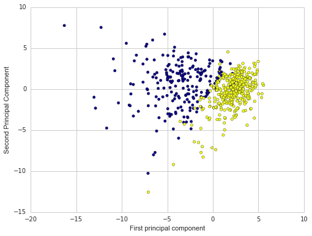
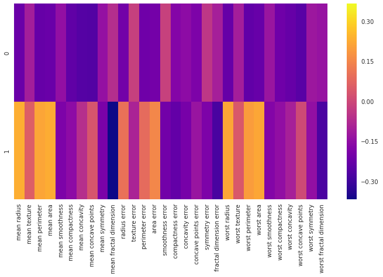

Principal Component Analysis for Doctors
Start by importing the necessary libraries for this project
import matplotlib.pyplot as plt
import pandas as pd
import numpy as np
import seaborn as sns
%matplotlib inlineThe Data
Let’s work with the cancer data set.
from sklearn.datasets import load_breast_cancercancer = load_breast_cancer()cancer.keys()dict_keys(['DESCR', 'data', 'feature_names', 'target_names', 'target'])
print(cancer['DESCR'])Breast Cancer Wisconsin (Diagnostic) Database
Notes
-----
Data Set Characteristics:
:Number of Instances: 569
:Number of Attributes: 30 numeric, predictive attributes and the class
:Attribute Information:
- radius (mean of distances from center to points on the perimeter)
- texture (standard deviation of gray-scale values)
- perimeter
- area
- smoothness (local variation in radius lengths)
- compactness (perimeter^2 / area - 1.0)
- concavity (severity of concave portions of the contour)
- concave points (number of concave portions of the contour)
- symmetry
- fractal dimension ("coastline approximation" - 1)
The mean, standard error, and "worst" or largest (mean of the three
largest values) of these features were computed for each image,
resulting in 30 features. For instance, field 3 is Mean Radius, field
13 is Radius SE, field 23 is Worst Radius.
- class:
- WDBC-Malignant
- WDBC-Benign
:Summary Statistics:
===================================== ======= ========
Min Max
===================================== ======= ========
radius (mean): 6.981 28.11
texture (mean): 9.71 39.28
perimeter (mean): 43.79 188.5
area (mean): 143.5 2501.0
smoothness (mean): 0.053 0.163
compactness (mean): 0.019 0.345
concavity (mean): 0.0 0.427
concave points (mean): 0.0 0.201
symmetry (mean): 0.106 0.304
fractal dimension (mean): 0.05 0.097
radius (standard error): 0.112 2.873
texture (standard error): 0.36 4.885
perimeter (standard error): 0.757 21.98
area (standard error): 6.802 542.2
smoothness (standard error): 0.002 0.031
compactness (standard error): 0.002 0.135
concavity (standard error): 0.0 0.396
concave points (standard error): 0.0 0.053
symmetry (standard error): 0.008 0.079
fractal dimension (standard error): 0.001 0.03
radius (worst): 7.93 36.04
texture (worst): 12.02 49.54
perimeter (worst): 50.41 251.2
area (worst): 185.2 4254.0
smoothness (worst): 0.071 0.223
compactness (worst): 0.027 1.058
concavity (worst): 0.0 1.252
concave points (worst): 0.0 0.291
symmetry (worst): 0.156 0.664
fractal dimension (worst): 0.055 0.208
===================================== ======= ========
:Missing Attribute Values: None
:Class Distribution: 212 - Malignant, 357 - Benign
:Creator: Dr. William H. Wolberg, W. Nick Street, Olvi L. Mangasarian
:Donor: Nick Street
:Date: November, 1995
This is a copy of UCI ML Breast Cancer Wisconsin (Diagnostic) datasets.
https://goo.gl/U2Uwz2
Features are computed from a digitized image of a fine needle
aspirate (FNA) of a breast mass. They describe
characteristics of the cell nuclei present in the image.
A few of the images can be found at
http://www.cs.wisc.edu/~street/images/
Separating plane described above was obtained using
Multisurface Method-Tree (MSM-T) [K. P. Bennett, "Decision Tree
Construction Via Linear Programming." Proceedings of the 4th
Midwest Artificial Intelligence and Cognitive Science Society,
pp. 97-101, 1992], a classification method which uses linear
programming to construct a decision tree. Relevant features
were selected using an exhaustive search in the space of 1-4
features and 1-3 separating planes.
The actual linear program used to obtain the separating plane
in the 3-dimensional space is that described in:
[K. P. Bennett and O. L. Mangasarian: "Robust Linear
Programming Discrimination of Two Linearly Inseparable Sets",
Optimization Methods and Software 1, 1992, 23-34].
This database is also available through the UW CS ftp server:
ftp ftp.cs.wisc.edu
cd math-prog/cpo-dataset/machine-learn/WDBC/
References
----------
- W.N. Street, W.H. Wolberg and O.L. Mangasarian. Nuclear feature extraction
for breast tumor diagnosis. IS&T/SPIE 1993 International Symposium on
Electronic Imaging: Science and Technology, volume 1905, pages 861-870,
San Jose, CA, 1993.
- O.L. Mangasarian, W.N. Street and W.H. Wolberg. Breast cancer diagnosis and
prognosis via linear programming. Operations Research, 43(4), pages 570-577,
July-August 1995.
- W.H. Wolberg, W.N. Street, and O.L. Mangasarian. Machine learning techniques
to diagnose breast cancer from fine-needle aspirates. Cancer Letters 77 (1994)
163-171.
df = pd.DataFrame(cancer['data'],columns=cancer['feature_names'])
#(['DESCR', 'data', 'feature_names', 'target_names', 'target'])df.head()| mean radius | mean texture | mean perimeter | mean area | mean smoothness | mean compactness | mean concavity | mean concave points | mean symmetry | mean fractal dimension | ... | worst radius | worst texture | worst perimeter | worst area | worst smoothness | worst compactness | worst concavity | worst concave points | worst symmetry | worst fractal dimension | |
|---|---|---|---|---|---|---|---|---|---|---|---|---|---|---|---|---|---|---|---|---|---|
| 0 | 17.99 | 10.38 | 122.80 | 1001.0 | 0.11840 | 0.27760 | 0.3001 | 0.14710 | 0.2419 | 0.07871 | ... | 25.38 | 17.33 | 184.60 | 2019.0 | 0.1622 | 0.6656 | 0.7119 | 0.2654 | 0.4601 | 0.11890 |
| 1 | 20.57 | 17.77 | 132.90 | 1326.0 | 0.08474 | 0.07864 | 0.0869 | 0.07017 | 0.1812 | 0.05667 | ... | 24.99 | 23.41 | 158.80 | 1956.0 | 0.1238 | 0.1866 | 0.2416 | 0.1860 | 0.2750 | 0.08902 |
| 2 | 19.69 | 21.25 | 130.00 | 1203.0 | 0.10960 | 0.15990 | 0.1974 | 0.12790 | 0.2069 | 0.05999 | ... | 23.57 | 25.53 | 152.50 | 1709.0 | 0.1444 | 0.4245 | 0.4504 | 0.2430 | 0.3613 | 0.08758 |
| 3 | 11.42 | 20.38 | 77.58 | 386.1 | 0.14250 | 0.28390 | 0.2414 | 0.10520 | 0.2597 | 0.09744 | ... | 14.91 | 26.50 | 98.87 | 567.7 | 0.2098 | 0.8663 | 0.6869 | 0.2575 | 0.6638 | 0.17300 |
| 4 | 20.29 | 14.34 | 135.10 | 1297.0 | 0.10030 | 0.13280 | 0.1980 | 0.10430 | 0.1809 | 0.05883 | ... | 22.54 | 16.67 | 152.20 | 1575.0 | 0.1374 | 0.2050 | 0.4000 | 0.1625 | 0.2364 | 0.07678 |
5 rows × 30 columns
PCA Visualization
As we’ve noticed before it is difficult to visualize high dimensional data, we can use PCA to find the first two principal components, and visualize the data in this new, two-dimensional space, with a single scatter-plot. Before we do this though, we’ll need to scale our data so that each feature has a single unit variance.
from sklearn.preprocessing import StandardScalerscaler = StandardScaler()
scaler.fit(df)StandardScaler(copy=True, with_mean=True, with_std=True)
scaled_data = scaler.transform(df)PCA with Scikit Learn uses a very similar process to other preprocessing functions that come with SciKit Learn. We instantiate a PCA object, find the principal components using the fit method, then apply the rotation and dimensionality reduction by calling transform().
We can also specify how many components we want to keep when creating the PCA object.
from sklearn.decomposition import PCApca = PCA(n_components=2)pca.fit(scaled_data)PCA(copy=True, n_components=2, whiten=False)
Now we can transform this data to its first 2 principal components.
x_pca = pca.transform(scaled_data)scaled_data.shape(569, 30)
x_pca.shape(569, 2)
Great! We’ve reduced 30 dimensions to just 2! Let’s plot these two dimensions out!
plt.figure(figsize=(8,6))
plt.scatter(x_pca[:,0],x_pca[:,1],c=cancer['target'],cmap='plasma')
plt.xlabel('First principal component')
plt.ylabel('Second Principal Component')<matplotlib.text.Text at 0x11eb56908>

Clearly by using these two components we can easily separate these two classes.
Interpreting the components
Unfortunately, with this great power of dimensionality reduction, comes the cost of being able to easily understand what these components represent.
The components correspond to combinations of the original features, the components themselves are stored as an attribute of the fitted PCA object:
pca.components_array([[-0.21890244, -0.10372458, -0.22753729, -0.22099499, -0.14258969,
-0.23928535, -0.25840048, -0.26085376, -0.13816696, -0.06436335,
-0.20597878, -0.01742803, -0.21132592, -0.20286964, -0.01453145,
-0.17039345, -0.15358979, -0.1834174 , -0.04249842, -0.10256832,
-0.22799663, -0.10446933, -0.23663968, -0.22487053, -0.12795256,
-0.21009588, -0.22876753, -0.25088597, -0.12290456, -0.13178394],
[ 0.23385713, 0.05970609, 0.21518136, 0.23107671, -0.18611302,
-0.15189161, -0.06016536, 0.0347675 , -0.19034877, -0.36657547,
0.10555215, -0.08997968, 0.08945723, 0.15229263, -0.20443045,
-0.2327159 , -0.19720728, -0.13032156, -0.183848 , -0.28009203,
0.21986638, 0.0454673 , 0.19987843, 0.21935186, -0.17230435,
-0.14359317, -0.09796411, 0.00825724, -0.14188335, -0.27533947]])
In this numpy matrix array, each row represents a principal component, and each column relates back to the original features. we can visualize this relationship with a heatmap:
df_comp = pd.DataFrame(pca.components_,columns=cancer['feature_names'])plt.figure(figsize=(12,6))
sns.heatmap(df_comp,cmap='plasma',)<matplotlib.axes._subplots.AxesSubplot at 0x11d546f98>

This heatmap and the color bar basically represent the correlation between the various feature and the principal component itself.
Conclusion
Hopefully this information is useful to you when dealing with high dimensional data!